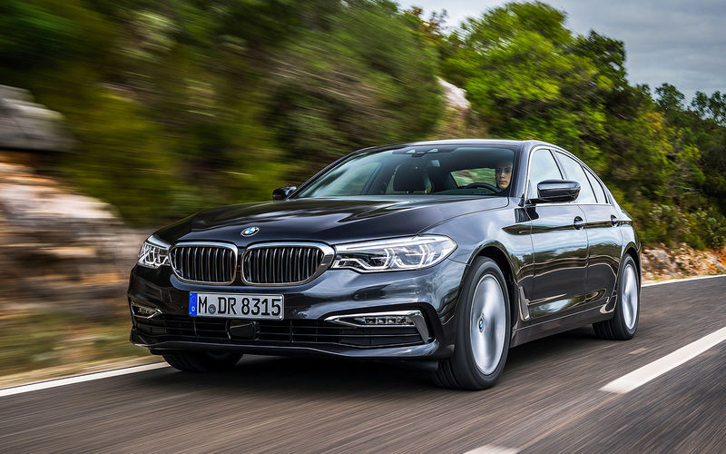

|

|
The BMW 5 Series is an executive car manufactured by BMW since 1972.
It is the successor to the New Class Sedans and is currently in its seventh generation.
Initially, the 5 Series was only available in a sedan body style. The wagon/estate body style
(called "Touring") was added in 1991 and the 5-door fastback (called "Gran Turismo") was produced
from 2009 to 2017.
The first generation of 5 Series was powered by naturally aspirated four-cylinder and six-cylinder
petrol engines. Following generations have been powered by four-cylinder, six-cylinder, V8 and V10
engines that are either naturally aspirated or turbocharged.
Since 1982, diesel engines have been included in the 5 Series range. |